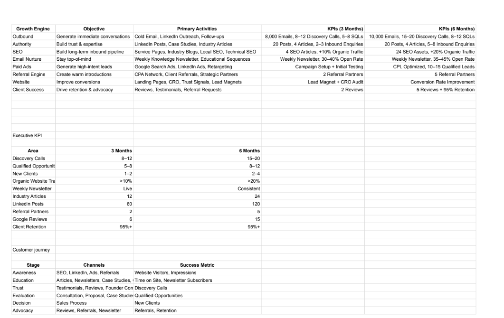

Set up domains and mailboxes, completed the warm-up process and built targeted email sequences. Campaigns were launched market by market, beginning with the USA.
All case studies
AccountX · Case Study 02
Building a Global Sales & Marketing Engine
As Manager, Growth and Communication, I built AccounTX’s global acquisition foundation across 10 markets, covering market-specific ICP research, market-specific positioning, website and sales messaging, proposal logic, email infrastructure, outbound workflows and lead generation in close partnership with the founders and sales team.
Opportunity
Three foundational gaps were preventing AccountX from building a predictable sales pipeline across global markets.
01 No marketing or sales engine. AccountX had no structured inbound or outbound system. Lead generation depended on ad hoc outreach, with no repeatable email, LinkedIn, SEO or content process supporting the sales team.
02 No market-specific ICP framework. Each market had different compliance requirements, regulations, buyer pain points and service expectations, but there was no documented segmentation or country-specific ICP framework to guide targeting and messaging.
03 No marketing collateral. The business lacked essential sales and brand assets, including a company profile, pitch presentations, social content and videos, making it harder to explain services and build trust with prospects.
Solution
The response was built around three connected systems: create demand, document market intelligence and equip sales with consistent collateral.
01
Inbound and outbound acquisition engine
I built the acquisition foundation from the ground up, beginning with email infrastructure and country-specific outbound, then adding LinkedIn marketing and an SEO-led inbound layer.
Used LinkedIn for decision-maker targeting, organic communication and paid campaigns to support AccountX’s visibility and lead generation.
Improved website messaging and on-page SEO, then developed articles around market-entry, accounting, tax and compliance search intent.
Growth engine roadmap

02
Market-specific ICP research and segmentation
I created a detailed research document that translated each market’s compliance environment, buyer context and service demand into a usable targeting and messaging framework.
Market context
Country regulations, compliance requirements and business setup rules
ICP segmentation
Company stage, geography, business type, buyer role and service need
Pain-point mapping
Expansion friction, accounting gaps, tax risk and reporting challenges
Service fit
Incorporation, accounting, tax, compliance and Virtual CFO support
Campaign output
Country-specific ICP, message angle and targeting brief
Initial market rollout
USA
India
UAE
United Kingdom
Singapore
Australia
Initial rollout shown across six markets; the research framework was later expanded across 10 markets.
03
Marketing collateral and content system
I developed the core assets needed to explain AccountX clearly across sales conversations, campaigns and social channels, while keeping the positioning consistent from first touch to proposal.
A structured overview of AccountX, its services, markets and value proposition.
Sales PPTs and service presentations tailored for prospects and partner conversations.
Social content and educational articles supporting trust, SEO and market awareness.
Brand and service videos that made complex accounting and compliance work easier to understand.
Results
The work gave AccountX a repeatable acquisition system, clearer market-specific targeting and a consistent set of sales and marketing assets for global growth.
Qualified lead generation
8–10/month
Qualified leads generated through warmed email campaigns, LinkedIn activity and structured follow-up.
Market-specific GTM research
10 markets
ICP segmentation, compliance context, buyer pain points and service-fit messaging documented across priority markets.
Marketing enablement
Multi-format
Company profile, pitch presentations, posts, articles and videos built for sales conversations and marketing campaigns.
Acquisition transformation. AccountX moved from having no defined inbound or outbound engine to warmed email infrastructure, country-specific campaigns, LinkedIn marketing, an SEO-led website and educational content.
Commercial foundation. The business gained a reusable ICP research framework and consistent collateral that made the offer easier to target, explain and sell across different markets.
Continue with the next
growth stories
Bertrand & Bernard LLP
Performance Marketing, CRO & Growth
Worked across 7+ client accounts spanning Google Ads, Meta Ads, paid acquisition, landing pages, Shopify CRO, A/B testing, pricing strategy and B2B outbound.
7+ clients · 3 featured case studies
View the case studies
Quick Clean Laundry Systems
Commercial Laundry Growth Engine
Built Quick Clean’s commercial growth system across hospitality, healthcare and retail through ICP-led qualification, sector positioning, sales enablement and connected CRM workflows.
20–25 SQLs/quarter · 15–17 retail leads/month
View the case study